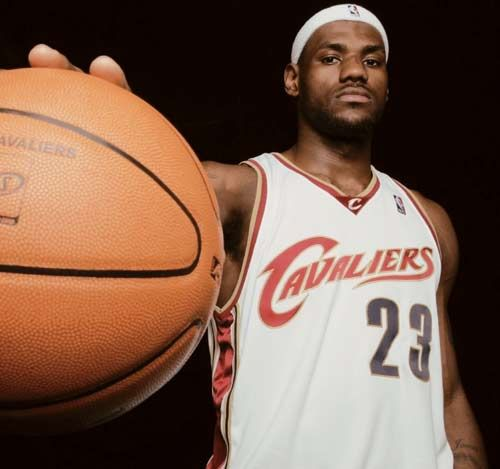

| 勒布朗·詹姆斯 | |||||
|
|||||
明细介绍 勒布朗·詹姆斯（LeBron James），1984年12月30日出生在美国俄亥俄州阿克伦，美国职业篮球运动员，司职小前锋，绰号"小皇帝"，效力于NBA洛杉矶湖人队。 2003年6月27日，NBA选秀大会上，詹姆斯被骑士队挑中。2004年4月20日詹姆斯获得了赛季最佳新秀称号。 勒布朗·詹姆斯从高中开始就和女友萨瓦娜·布林森相恋，两人感情一直很不错，已经育有两个儿子。长子勒布朗·詹姆斯二世2004年10月6日出生，小儿子布莱克·马克西姆斯·詹姆斯诞生于2007年6月14日。2012年1月份，詹姆斯在自己的生日派对上向交往已久的女友萨瓦娜·布林森求婚。勒布朗当着所有亲朋好友的面，单膝跪地向萨瓦娜求婚。萨瓦娜也感动的哭了出来，并答应了他。2013年9月14日两人在加利福尼亚州圣迭戈正式完婚。2014年10月22日，萨瓦娜在阿克伦产下一名女婴，两个人为孩子取名朱莉·詹姆斯。 |
|||||
|
勒布朗·詹姆斯 |